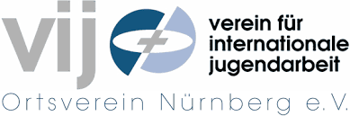

Encontre a sua família do exterior, hoje mesmo!
Confira o site para saber mais
Confira o site para saber mais
Ser Au Pair é ter a oportunidade de morar com uma família anfitriã em outro país, cuidando das crianças e ajudando em pequenas tarefas do dia a dia. Em troca, você receberá hospedagem, alimentação, algum apoio financeiro e a chance de estudar o idioma local.
Mais do que uma experiência de trabalho, ser Au Pair significa imersão cultural, novas amizades, crescimento pessoal e a possibilidade de conhecer o mundo de uma forma única.
Parceiro Oficial Agência de Au Pair na Alemanha
Verein für internationale Jugendarbeit
100% de acompanhamento direto para uma família Anfitriã Alemã
https://vij-hamburg.de/

Os requisitos para se tornar uma Au Pair na Alemanha dependem da sua nacionalidade. Se você é cidadão de um país da União Européia, você só precisará:
O Programa de Au Pair tem duração mínima de 6 meses e o máximo de 1 ano.
A idade mínima é geralmente entre 18 e 26 anos, dependendo do país de destino.
Sim, é necessário ter experiência comprovada com cuidado de crianças, seja profissional ou pessoal.
É recomendado ter pelo menos um nível básico de alemão (A1/A2) antes da viagem.
Pronta para começar sua jornada? Preencha o formulário e entraremos em contato!